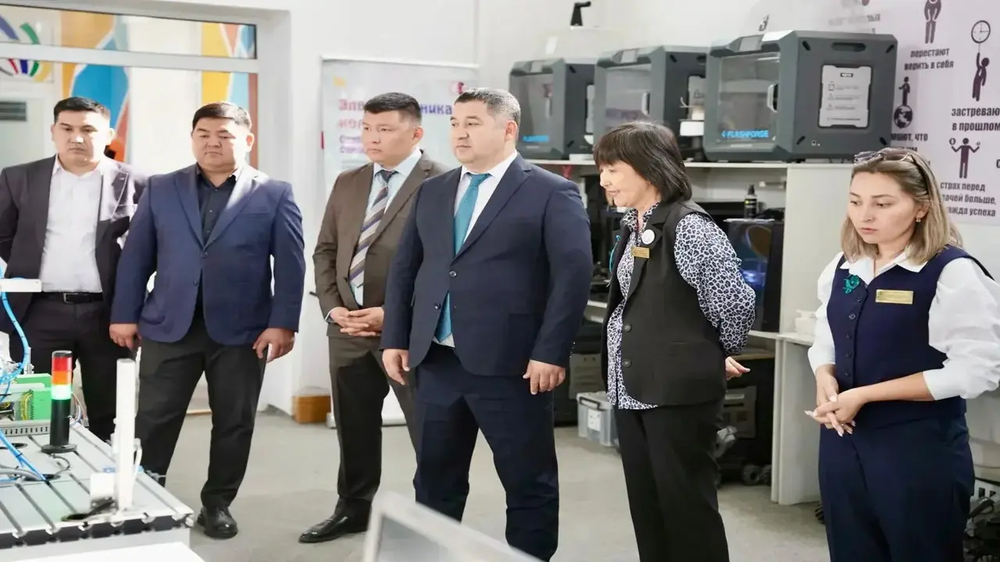

Семейде «Еңбекші жастар – 2025» фестивалі өтті
Семей қаласындағы Электротехникалық колледж базасында «Жұмысшы мамандықтар жылы» аясында «Шығыс Жастары» қоғамдық қорының ұйымдастыруымен «Еңбекші жастар – 2025» атты қалалық фестиваль өтті.
Фестивальдің мақсаты – еңбек нарығындағы сұранысқа ие мамандықтарды насихаттау, жастарды техникалық және жұмысшы кәсіптерге баулу, сондай-ақ еңбекке деген оң көзқарас қалыптастыру.
Іс-шараға Семей қаласы әкімінің орынбасары Қуаныш Әбілдаев, қалалық ішкі саясат бөлімінің басшысы Айбек Ғапуов, Абай облыстық Еңбек мобильділігі орталығының директоры Еркебұлан Тұрсын, колледж студенттері мен өңірдің еңбекші жастары қатысты.